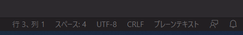
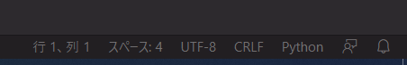

VSCodeでデフォルトのシンタックスハイライトを設定する
下の画像のようなプレーンテキストとか拡張子がついていないファイルに対してシンタックスを自動で設定したい。（下記の記事の通り、言語の自動検出機能が実装されていたりするので必要性は少なくなってきたけども。）

「ユーザ設定」 - 「設定」でDefalut Languageを検索。ここで言語モードを設定する
これで新規ファイルを作ったときに自動的に選択した言語がハイライトされる。

関連しているかもしれない記事
- VSCodeにお気に入りフォントを設定する
- VSCodeのシンタックスハイライトのコピー機能の無効化
- Visual Studio Code(VSCode)の設定移行
- VSCodeで10000行以上の矩形選択を行った場合に「カーソルの数は10000個に制限されています」が出力される